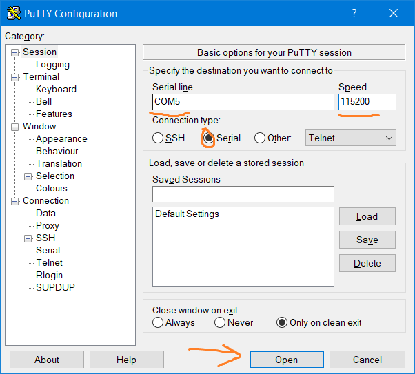
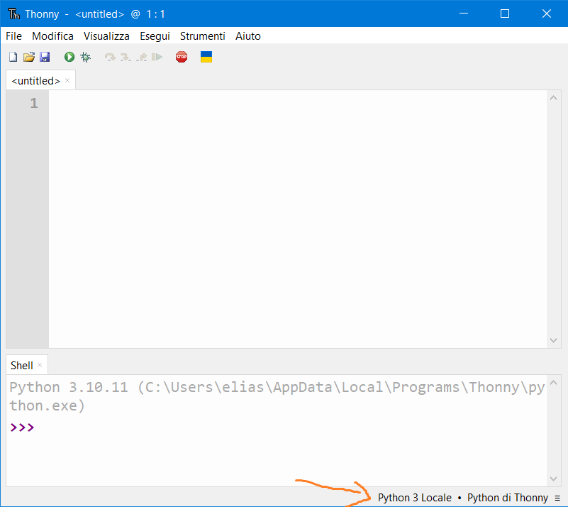
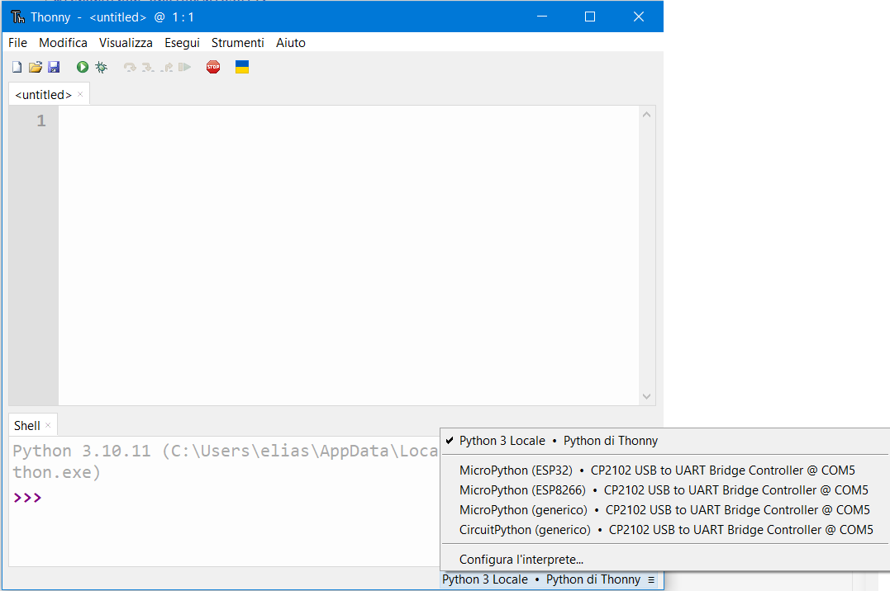
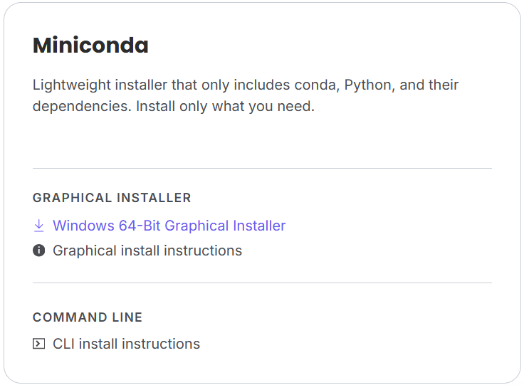

Home / Scheda 2 — Configurazione dell'ESP
Configurazione dell'ESP32
Questa è la fase in cui la scheda "prende vita": installiamo i driver, sostituiamo il firmware di fabbrica con MicroPython e impariamo a trasferire ed eseguire codice. Il percorso è diviso in tre fasi, come nella documentazione del repository.
Scheda ESP32 · cavo USB dati (non solo di ricarica) · PC con Anaconda/Miniconda · connessione internet.
FASE 1 — Driver USB
- Controlla Gestione dispositivi Premi Windows + X e apri Gestione dispositivi: se compare un dispositivo con driver mancante (triangolo giallo), cerca quella dicitura online e installa il driver previsto.
-
Verifica il riconoscimento
Sempre in Gestione dispositivi, sotto Porte (COM e LPT) deve comparire una voce
dedicata, ad esempio
Silicon Labs CP210x USB to UART Bridge (COM5). Annota il numero di COM: servirà ovunque. - Conferma con uno strumento esterno Puoi verificare la connessione anche con Arduino IDE, PuTTY o Thonny: premi il tasto reset della board e osserva se sul terminale appaiono dati.



Se il dispositivo resta nascosto o non reperibile, probabilmente stai usando un cavo che non scambia dati: serve un cavo USB dati, non uno di sola ricarica.
FASE 2 — Ambiente e firmware MicroPython
Il firmware di fabbrica non esegue MicroPython: va sostituito. Per farlo usiamo un ambiente virtuale dedicato creato con Anaconda (o, se preferisci, il terminale di VS Code).
2.1 Installare Anaconda / Miniconda
Può bastare la versione leggera Miniconda.

2.2 Creare l'ambiente e installare gli strumenti
Apri Anaconda Prompt ed esegui:
conda create -n pr_esp32 python=3.11
conda activate pr_esp32
python -m pip install esptool mpremote- esptool — scrive (flash) il firmware MicroPython sulla scheda.
- mpremote — strumento ufficiale per comunicare con la scheda, trasferire file ed eseguire script.
Preferisci pip install a conda install: i canali Anaconda a pagamento possono restituire errori HTTP 403 Forbidden. Verifica con esptool version e mpremote --help.
2.3 Scaricare il firmware
Vai su micropython.org/download,
scegli la scheda corretta (ESP32 generico, oppure S3/C3 se in uso) e scarica il file
.bin più recente. Nel repository è incluso un firmware di esempio:
configure/ESP32_GENERIC-20260824-v1.29.0.bin.
2.4 Cancellare la flash e scrivere il firmware
Sostituisci COM3 con la tua porta e firmware.bin con il file scaricato:
esptool --port COM3 erase_flash
esptool --port COM3 --baud 460800 write_flash -z 0x1000 firmware.bin
Variante "storica" con underscore: esptool.py --port COM3 erase-flash e
esptool.py --baud 460800 write_flash 0x1000 firmware.bin.
Riprova con --baud 115200 (più lento ma più stabile) se il cavo è
scadente. Al termine l'output deve confermare Hash of data verified.
FASE 3 — Lavorare con la REPL e i file .py
Molte volte configurare il dispositivo direttamente dalla REPL è scomodo:
- incollare istruzioni dal web fa saltare le indentazioni;
- alcuni caratteri possono "sporcare" il codice;
- un'istruzione può non dare il risultato voluto e non ce ne accorgiamo.
In molti di questi casi la REPL chiude la connessione. La soluzione è scrivere un file .py, copiarlo nella memoria della scheda ed eseguirlo da lì.
mpremote connect COM3 fs cp wifi_config.py :wifi_config.py
mpremote connect COM3 run wifi_config.pySolo un programma può usare la porta seriale. Se Thonny, VS Code o un terminale sono aperti sulla stessa porta, mpremote darà could not enter raw repl. Chiudili prima.
Riepilogo comandi mpremote
| Comando | Cosa fa |
|---|---|
mpremote devs | Elenca le porte seriali disponibili |
mpremote connect COM3 | Apre la REPL interattiva (esci con Ctrl+]) |
mpremote connect COM3 fs ls | Elenca i file presenti sulla scheda |
mpremote connect COM3 fs cp file.py :file.py | Copia un file dal PC alla scheda |
mpremote connect COM3 fs cp :file.py . | Copia un file dalla scheda al PC |
mpremote connect COM3 fs rm :file.py | Elimina un file dalla scheda |
mpremote connect COM3 run file.py | Esegue uno script locale senza salvarlo |
mpremote connect COM3 exec "import file" | Esegue un file già presente sulla scheda |
mpremote mip install <pacchetto> | Installa un pacchetto sulla scheda |
mpremote reset | Reset software della scheda |
I comandi si possono concatenare con +: mpremote connect COM3 fs cp main.py : + reset.
Comandi esptool di riferimento
| Comando | Cosa fa |
|---|---|
esptool --port COM3 erase_flash | Cancella la memoria flash della scheda |
esptool --port COM3 --baud 460800 write_flash -z 0x1000 firmware.bin | Scrive il firmware MicroPython |
Un assaggio: web server con Microdot
Flask non funziona su MicroPython (richiede CPython completo). L'alternativa leggera con sintassi simile è Microdot. Si può installare manualmente, senza bisogno di Wi-Fi durante l'installazione:
pip download microdot --no-deps -d .
# oppure
git clone https://github.com/miguelgrinberg/microdot.git
# oppure vedi examples/step3/microdot
mpremote connect COM3 fs cp microdot.py :microdot.pyEsempio minimo, che riusa lo script di connessione già scritto:
from microdot import Microdot
import wifi_config
wifi_config.connect_wifi("NOME_RETE", "PASSWORD_RETE")
app = Microdot()
@app.route('/')
def index(request):
return 'Ciao dalla ESP32!'
app.run(port=80)
Dopo l'avvio apri nel browser l'indirizzo IP assegnato alla scheda (visibile nell'output di
wlan.ifconfig()). Il dettaglio completo è nella
scheda Esempi.
Problemi comuni e soluzioni rapide
| Problema | Causa probabile | Soluzione |
|---|---|---|
CondaHTTPError 403 | Restrizioni sui canali Anaconda a pagamento | Usa pip install |
could not enter raw repl | Porta seriale occupata | Chiudi VS Code / Thonny / altri terminali |
could not read file | Uso errato di run vs exec | Usa exec "import file" per file già sulla scheda |
| La scheda non risponde / simboli strani | Firmware non flashato correttamente | Rifai erase_flash poi write_flash |
| Scheda non riconosciuta | Cavo errato (solo ricarica) | Usa un cavo USB dati |
mip install fallisce | Pacchetto non nell'indice o manca il Wi-Fi | Installa manualmente con fs cp |